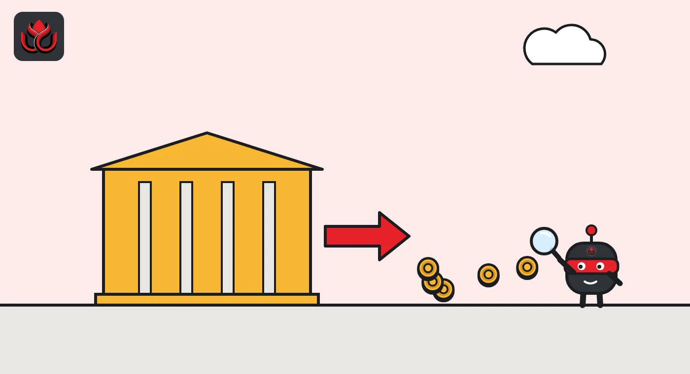

Asian exchanges lost $2.2 billion in one week, and $2.12 billion of it left Binance
DeepSea's report for October 12 to 18 shows stablecoins, mostly USDT on Tron, pouring out of Binance while bitcoin flowed in. The same week, hack-linked funds flooded exchange deposit addresses and a few big Hyperliquid traders turned short.
Key points
- Asian exchanges lost $2.20 billion net in the week of October 12 to 18, 2026, and Binance accounted for $2.12 billion of it, per DeepSea. Stablecoins made up 92% of the volume.
- Bitcoin moved the other way: Binance took in a net 14,698 BTC and Bybit 3,202 BTC, while Kraken and OKX lost coins.
- 4,220 deposits of hack-linked funds worth $355.31 million reached exchanges, led by funds DeepSea links to the fake FomoPeek app.
 What DeepSea's data shows
What DeepSea's data shows
DeepSea's Weekly Smart Money and Global Money Flows Report for October 12 to 18, 2026, is the latest edition published as of November 2. It covers Solana smart money, token flows on Base, Ethereum and Arbitrum, Hyperliquid perpetual futures, exchange flows in Asia, the US, Europe and Latin America, lending, and hacks. BSC is not covered.
Its biggest number is the $2.12 billion that left Binance, covered in detail below. The report also shows a sharp turn in positioning. Tracked Hyperliquid traders held $2.56 billion short against $1.57 billion long, a long/short ratio of 0.6x, down from 4.2x the week before. Net long exposure fell by $630.08 million on HYPE, $605.31 million on ether and $561.52 million on bitcoin. Yet 87 of 173 coins still leaned long by count, so the shift came from a few very large accounts. LC Insight covers that flip in a separate article.

Data: DeepSea (desea.io), checked November 1, 2026, 11:28 p.m. ET.
How $2.12 billion left Binance
In the week of October 12 to 18, Asian exchanges tracked by DeepSea took in and paid out $8.20 billion, a net outflow of $2.20 billion. That was smaller than the $4.75 billion outflow the week before. Stablecoins made up 92% of the volume.
Binance alone accounted for minus $2.12 billion ($541.71 million in, $2.66 billion out). By chain, Tron carried most of it at minus $2.05 billion, and USDT was the top net withdrawal at minus $2.16 billion. OKX was the largest Asian gainer at +$83.90 million.
Bitcoin moved the other way. DeepSea shows Binance received a net 14,698 BTC and Bybit 3,202 BTC, while Kraken lost 1,777 BTC and OKX 964 BTC. Coins sent to an exchange are often, though not always, coins someone plans to sell.
In the US and Europe, flows were close to flat: +$65.09 million on $11.61 billion in and $11.54 billion out. Kraken gained $116.86 million. The largest single transfer was a $247.95 million USDC deposit to Coinbase, logged at 3:54 p.m. ET on October 13.
Net exchange flows by venue
Net exchange flows for October 12 to 18, as reported by DeepSea. Bars show the size of each flow; the label gives the direction.
Net exchange flows, October 12 to 18 2026
US$ million (absolute size)

Hack-linked funds reached exchanges
DeepSea counted 4,220 deposits of hack-linked funds reaching exchanges, worth $355.31 million, up from 1,651 deposits ($112.12 million) the week before. Most traced to what DeepSea calls the FomoPeek app-store poisoning: 4,117 deposits worth $341.84 million, almost all to Binance deposit addresses. Funds from the old Bitfinex hack held by the US government made 103 deposits worth $13.47 million. DeepSea's risk database grew by 520 addresses to 26,368.
DeepSea's live scam alerts page shows a much lower figure for FomoPeek ($1.03 million sent to exchanges, checked November 2), so the report numbers should be read with that gap in mind.
On Hyperliquid, a handful of huge shorts
The report lists the largest single moves. A tracked trader opened an ether short of $262.09 million on October 15 and another of $256.91 million on October 18. Bitcoin shorts of $227.51 million (October 15) and $227.07 million (October 18) followed the same pattern. All were at 5x leverage. A wallet DeepSea labels SM6e36 opened an ether short of $220.64 million and a bitcoin short of $206.94 million on October 14.
Activity was heavy overall: 7,490 positions opened against 721 full closes, and 23 liquidations. DeepSea counted 49 positions worth $191.61 million within 10% of their liquidation price, including a $28.69 million bitcoin short at 20x that would be wiped out near $85,063.
Prices barely moved that week. CoinGecko's daily closes show bitcoin at $81,604 on October 14 and $82,020 on October 18. Ether went from $2,419.69 to $2,407.84 and HYPE from $80.81 to $78.86. The big traders were positioning for a move rather than reacting to one.
Where smart money and whales bought
On-chain, the heaviest combined buying by smart money, whales and KOLs went into CHIP on Arbitrum (+$4.18 million), Aerodrome's AERO on Base (+$3.31 million) and Treasure's MAGIC on Arbitrum (+$3.27 million). The heaviest selling hit CLAUS on Ethereum (minus $391,700). DeepSea logged 35 accumulation signals against 17 distribution signals.
Buying did not lift prices. CoinGecko shows AERO closing at $0.9034 on October 14 and $0.7974 on October 18, a drop of about 12% while whales bought. Solana smart money also had a poor week: 228 wallets closed trades for a combined realized loss of $272,500, and only 47 ended in profit.
LC Insight analysis
This section is our reading of the facts above, not a statement of fact.
- We think the Binance outflow is the number to remember, and it is not simple to read. Stablecoins leaving an exchange can mean less money ready to buy, while the 14,698 BTC flowing in at the same time looks like coins being readied for sale. Together they point to a cautious week on the largest venue.
- The Hyperliquid flip backs up that caution. A few accounts built more than $1 billion of 5x shorts while prices were flat, and bitcoin later closed below $78,000 on October 29.
- The gap between the report's FomoPeek deposit figure and DeepSea's live page is large enough that we would treat the $341.84 million as unconfirmed until DeepSea reconciles the two.
What's next
- DeepSea's next weekly report, covering October 19 onward
- Whether the large 5x shorts were closed after the late October drop
- Binance stablecoin balances after the October 29 breach
- Any update to the FomoPeek figures
Disclaimer. This article is based on public information and the sources listed below as of the update time shown. It is for information only and is not investment, legal or tax advice. Figures may change as companies and authorities publish new data.
Sources
- DeepSea, Weekly Smart Money and Global Money Flows Report, October 12 to 18 2026
- DeepSea, Weekly Smart Money and Global Money Flows Report, October 5 to 11 2026
- DeepSea, Scam alerts and Hacks list, checked November 2, 2026
- CoinGecko, Bitcoin historical data
- CoinGecko, Hyperliquid (HYPE) historical data
- CoinGecko, Aerodrome Finance (AERO) historical data